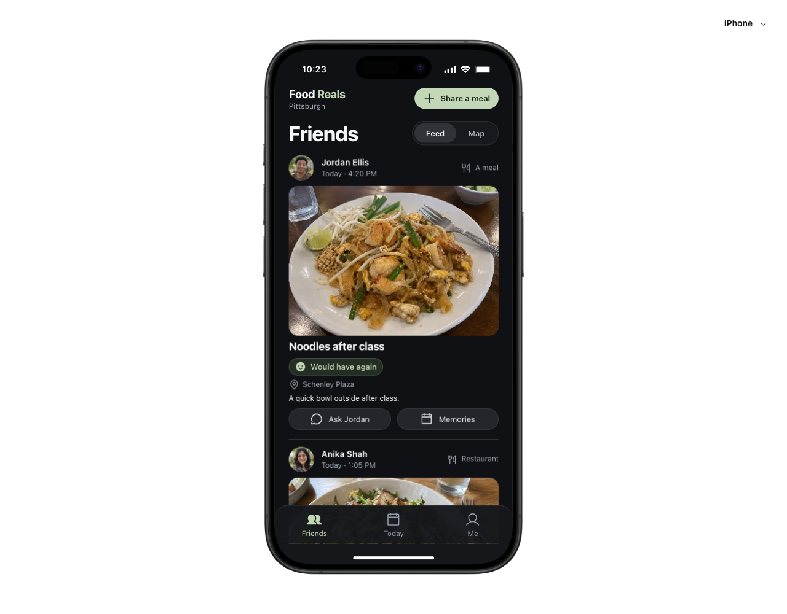

Keep the source visible.
Every insight had to point back to a review, a saved prototype, or a declared hypothesis.
Process reflection · Mibly
This is what I tried across Discover, Define, Develop, and Deliver—plus the places where AI’s speed created false confidence, generic choices, or evidence that looked stronger than it was.


The approach
I used it to widen the set of things I could inspect: more reviews, more possible framings, more working states, and more edge cases. I did not treat fluent output as user evidence or a generated interface as a design decision.
Every insight had to point back to a review, a saved prototype, or a declared hypothesis.
A coded theme, screen, or interaction was useful only when I could challenge it.
Functional checks could not establish desire, trust, or a lasting social habit.
01 / Discover
I collected 688 unique public Beli reviews and created a deliberately star-balanced sample of 250 for analysis: 25 reviews per star rating on each of two platforms. AI read the full text against a defined multilabel codebook and helped surface recurring themes.
Scripts gathered and deduplicated review text. One AI analyst applied overlapping codes. I also ran five AI-simulated interviews to explore situations around posting, privacy, and remembering meals.
AI made a large text set easier to organize, preserved review IDs, and surfaced social connection and personal memories as themes worth investigating.
The sample was nonrepresentative, one AI coder had no intercoder check, and simulated interviews were not participants. The output framed questions; it did not validate demand.
Overlapping counts in the selected sample, not estimates of all Beli users.
02 / Define
I asked AI to compare incumbent capabilities, review themes, and several possible product centers: ranking restaurants, browsing a food feed, keeping personal memories, or catching up with friends on a map.
“Keep track of restaurants.”
“Catch up through today’s meals.”
AI helped contrast Beli’s published product, BeReal’s social structure, map conventions, and the themes in the review sample.
It was useful for stress-testing whether a feature was actually different, or merely a familiar pattern with a new surface.
I made the shift from restaurant utility to everyday connection and set the privacy principle: a meal location is not live presence.
How might everyday meals help
friends feel a little closer?
03 / Develop
I used AI to turn directions into working React prototypes, then treated every output as a draft. The faster I could see and use a version, the more specific my next critique became.

I supplied product references, asked for functional screens, used the prototype, named the mismatch, and generated a narrower revision.
The map could become Home, the duplicate Chat action could become a people center, and audience rules could become testable behavior without restarting the prototype.
AI did not notice that the hierarchy still felt like a restaurant tool, that Chat appeared twice, or that sample imagery made the experience feel less personal. I had to see and name those problems.
04 / Deliver
I used AI-assisted implementation and automated checks to move beyond a happy-path mockup. The prototype exercises navigation, posting, audience visibility, restaurant actions, and fallback behavior.
A pending request does not unlock friend content. Home and private meals remain outside friends-of-friends discovery.
Map, feed, people, memories, capture, and profile flows remain navigable across the supported phone frames.
A canceled native share does nothing; unavailable clipboard access reveals selectable text instead of failing silently.
I used AI to implement interaction rules, generate test cases, and compare expected states against the working prototype.
AI was valuable for tracing state, checking regressions, and keeping privacy rules consistent across multiple screens.
No automated test can tell me whether friends understand the map, feel safe sharing, or return for an ordinary meal. That requires real participants over time.
What I learned
AI increased the number of artifacts I could inspect. The quality of the project still depended on the quality of the questions, critiques, sources, and boundaries I brought to it.
Review coding with a visible method, rapid concept prototypes, focused UI revisions, and systematic interaction checks.
Choosing the need, interpreting weak evidence, evaluating privacy tradeoffs, and deciding whether the product deserves to exist.
Observe whether they understand the location model, share without extra work, and return after the novelty fades.